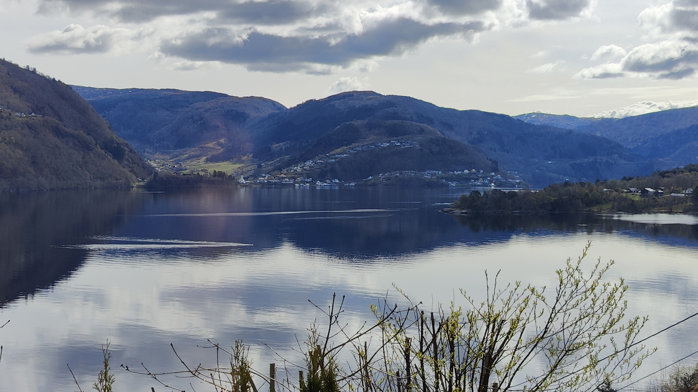

Utsikt fra Fløyen
Fløyen- en av 7 fjell som omringer Bergen, og dene utsikten er en av tingene dette fjellet byr på.

Fløybanen
Det er mange veier opp Fløyen, fløybanen er en av dem.

Troll
Troll er både farlige og dumme i eventyrene, og bor på utilgjendelige og uberørt natur.

Tursti
For de som liker å gå er dene stien veien opp fløyen hvor man kan nytte den nydelige naturen.

Skansemyren
Dette stedet liger ved siden av lekeplasen og kan ses på veien opp Fløyen. Om vinteren blir det om til skøytebanen.
Utsikt på en del av Bergen
På dete bildet kan man se fisketorget som liger i nærheten av fløybanen stasjon.